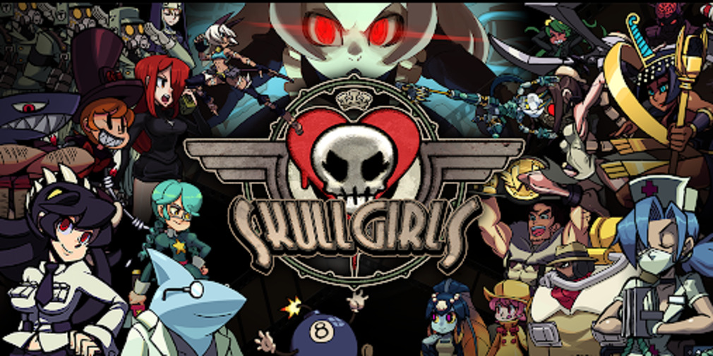
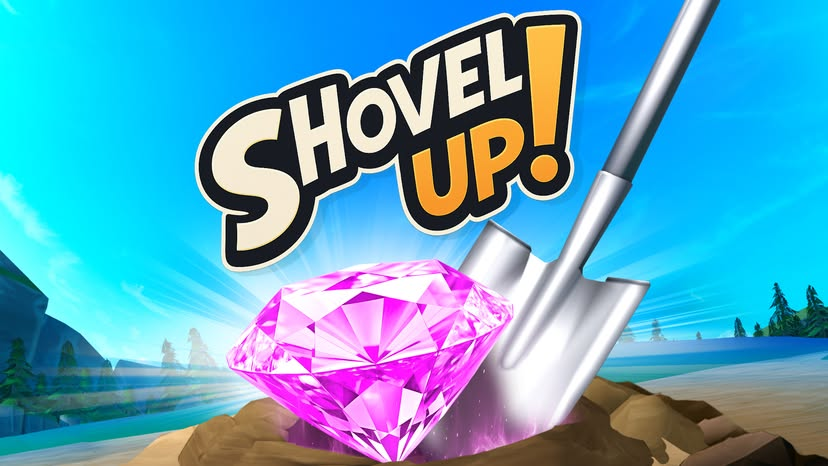
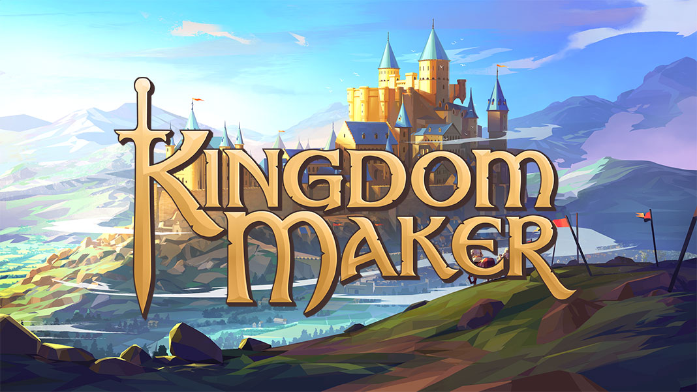

SKULLGIRLS MOBILE · ECONOMY & MONETIZATION
Reworked the Backstage Pass
Redesigned its point curve, tasks, and rewards; pass revenue rose 35.3% and unique buyers rose 38.8%.
Welcome to my world of game design. I made this portfolio interactive to show how I think about choices, rewards, and progression. Choose the path that works for you.
I'm an economy and systems designer focused on progression, rewards, and Live Ops. I've shaped player-facing systems from early concept through live games, with a product perspective on what works and why.

Redesigned its point curve, tasks, and rewards; pass revenue rose 35.3% and unique buyers rose 38.8%.

Owned progression and economy from concept to launch, then added Objectives and Quests in response to playtest feedback.

Designed and tuned key systems and built a tool that cut weekly event reporting from two days to one hour.
An interactive resume built around the thing I love most: designing systems that make exploration feel rewarding.
Get to know the person behind the work. Mini-Games is open from the start; projects and resume unlock through exploration.
Your choices shape the path. Portfolio view opens the work and resume instantly.
I design game economies, progression, and Live Ops systems that give players clear goals and meaningful choices.
I’ve built and tuned player-facing systems from pre-launch through Live Ops: the progression and economy for Shovel Up!, refreshed old and made new key systems for Kingdom Maker, and the Backstage Pass for Skullgirls Mobile. I like tracing a player problem to its underlying rules, then shaping rewards, pacing, and feedback around a better experience.
My product management experience helps me connect that design work to outcomes. At SEGA of America I was a Product Manager on Sonic Dash and a new unannounced title; elsewhere I’ve partnered with Product, Analytics, and Engineering on experiments, tooling, and roadmap decisions.
Resources, unlock order, reward pacing, and player guidance across mobile and Meta Horizon games.
Offer cadence, event rewards, bundle performance, and progression changes informed by player behavior.
Spreadsheet and AI-assisted workflows that let designers tune and validate systems with less routine engineering support.
These are the released games and systems I've helped shape. The featured work focuses on my contributions; the additional titles show the breadth of my experience.
Promotional artwork belongs to the respective rights holders. Artwork sources are linked on the featured cards.
Browse the released games below, then explore the case study blueprints I’ll build out next.
My contributions, scope, and results come first. Each card’s footer separates title-wide milestones from the work I contributed.
Promotional artwork belongs to the respective rights holders. An art source is linked on every card.
A fast, readable summary for people who want the details without playing through the game.
Game design · Product management perspective
Game designer specializing in economy design, progression, monetization, and Live Ops. I’ve owned systems from concept through launch, improved live features through data-informed iteration, and built tools that give design teams more autonomy. My Product Manager role at SEGA and cross-functional work bring a product perspective to player-centered design.
Unity, Unreal Engine, Google Sheets, Excel, SQL, A/B testing frameworks, Jira, Confluence, Git, Perforce, Figma, and Miro.
Associate Degree in Liberal Arts · De Anza Community College
Each game can grow into its own progression system. Focus Sprint is the first playable experiment.
Hit the target for 10 seconds. Each hit earns portfolio Points and Focus Sprint Hit Points you can invest between runs.
Select a node to see its effect. Invest Hit Points to unlock it.
Select a node to inspect it.